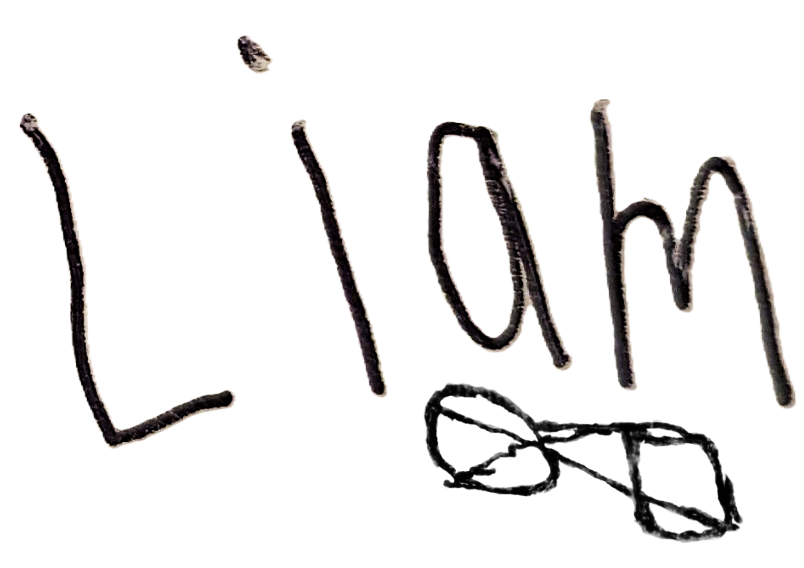
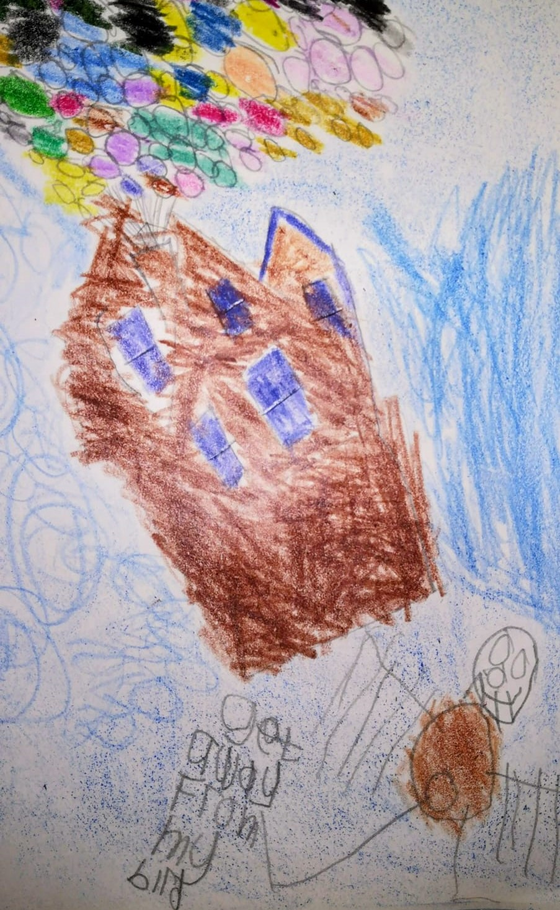

Liam’s Art Portfolio

A selection of Liam’s artwork over the past few years, facilitated by Mary. Pieces are accompanied by brief descriptions from both Liam and Mary.
An accessible, screen-reader and keyboard-navigation-friendly portfolio, for mobile and desktop devices. All artworks have descriptive alternative-text for screen-reader use. Click or tap an image to zoom.
Imagination
{kind=link}
Imagine More, 2019
Liam: I made this for the Credit Union Art Competition. The word imagine made me think of magic things. I drew a magic wizard, magic glasses, and a magic dragon. I used crayons, coloured pencil, and water colour.
Mary: We chatted about the “Imagine More” title and Liam brainstormed these ideas.
{.lightbox .framed-2 fig-alt=“A pencil drawing of a brown house being carried up into the sky by a huge bunch of colourful balloons. A man stands looking up at the house, with the text”Get away from my bird!” width=50% fig-align=“center”}
Up, 2020
Liam: I really like the “Up” film. I had no school so I did an art challenge. I drew and painted to stay happy. This is when the house goes up in the sky, just before it goes on fire. I used crayons.
Mary: We chatted about films: they day’s art challenge was about favourite films. Liam memorises the dialogue of favourite parts of films and likes to incorporate this (“Get away from my bird!”).
Me
{kind=link}
Self Portrait, 2020
Liam: This is a picture of me being happy. I thought yellow was a good colour It’s like the simpsons. I used coloured pencils.
Mary: I set up a mirror for Liam so he could see himself. He was happy with the result. He captures his smile really well.
{kind=link}
My Glasses, 2021
Top: detail of glasses drawing; bottom: full piece.
Liam: At art class in school, we had looked at Andy Warhol. I liked his pictures. [At home] I drew my glasses in a square, six times. I used crayons, watercolours and a sponge.
Mary: I assisted with measuring and marking the grid. Liam did six separate drawings of his glasses, so each is unique. He chose stronge colours to sponge on as background.
{kind=link}
Mixed media & collage
{kind=link}
A Dog in a Boat with Circles, 2021
Liam: I like drawing circles. I made a happy dog and a stripey boat in my sketch book. I stuck the dog and the boat on the circles.
Mary: Liam enjoyed making lots of marks. We talked about combining pieces of work to make new work. This collage emerged.
{kind=link}
“Grapefruit Moon, One Star Shining”, 2022
Liam: I made this about a Tom Waits some. It’s a good tune, and I like the moon when it’s full. I used tin-foil for the star.
Mary: We were listening to this song and chatting about the phrase “grapefruit moon”. We decided it was a good idea for a painting. I helped cutting out the star.
{kind=link}
The Map, February 2022
Top and middle: in-progress details; bottom: full piece.
Liam: I heard about the killing in Ukraine. I wanted to know where it was. I made a map of it and all the countries around it. I found out about lots of countries and capital cities. I worked on this for weeks.
Mary: I helped Liam to plot the map, and research the details of the countries. We recycled paper shopping bags as the base. I love that Liam made the Black Sea black. He used up a lot of pink crayon on Russia!
{kind=link}

Patterns
{kind=link}
Easter Egg, 2023
Top
Liam: Mam needed help with ideas for an Easter Card class. I used a stripey page from my sketchbook to make an Easter egg in a blank card.
Mary: The ready-made cards were perfect to turn some of Liam’s stripes into an Easter Egg.
The Stripes, 2024
Bottom
Liam: I was practising my stripes. I used every colour in the new paint set.
Mary: We bought new paints, and Liam was happy to try them out. Lots of colour!
{kind=link}
Copyright 2025, Liam Christopher Quinlan